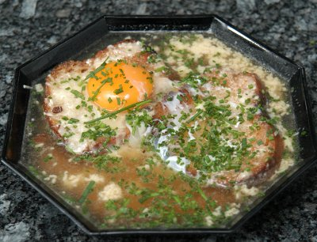

| Zutaten für 4 Personen: | |
| 6 Scheiben | Pariserbrot, dünn |
| 2 EL | Butter |
| 4 | Eier |
| 4 EL | Käse gerieben |
| 1 l | Fleischbouillon |
| 1 EL | Petersilie oder Schnittlauch |
Pariserbrot halbieren und in Butter goldgelb rösten.
In vorgewärmte Suppenteller legen.
Je ein rohes frisches Ei darauf geben und mit geriebenem Käse bestreuen.
Siedend heisse Bouillon in die Suppenteller giessen und Petersilie oder Schnittlauch darüber streuen.
Herbert Eigenmann, Code: PAV
Das mit dem Ei war für mich etwas ungewohnt. Aber die Suppe schmeckt mir ganz gut. Sehr einfach und schnell. RE 30.1.2010
@LINKBACK_TAG@ @WAKELOCK@